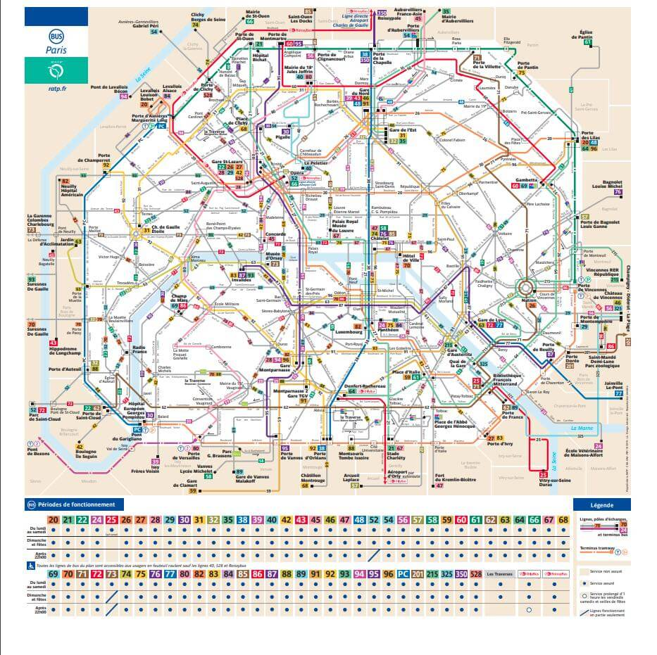

Paris Transport
Currently, Paris Metro has 303 lines and is 136 miles (219 km) long. The Metro signage is usually a letter M, or the words Métro or Métropolitain. The lines are numbered 1 to 14, and there are two additional lines called 3bis and 7bis. To get around the centre of Paris the Metro connects perfectly with the RER trains.
RATP Bus Network covers the entire territory of the city of Paris and the vast majority of its near suburbs. Operated by the RATP, this constitutes a dense bus network complementary to other public transport networks, all organized and financed by Île-de-France Mobilités. Other suburban bus lines are managed by private operators grouped in a consortium known as Optile (Organisation professionnelle des transports an association of 80 private bus operators holding exclusive rights on their lines. There are approximately 9500 buses serving public transportation across the Paris region, all operators included
